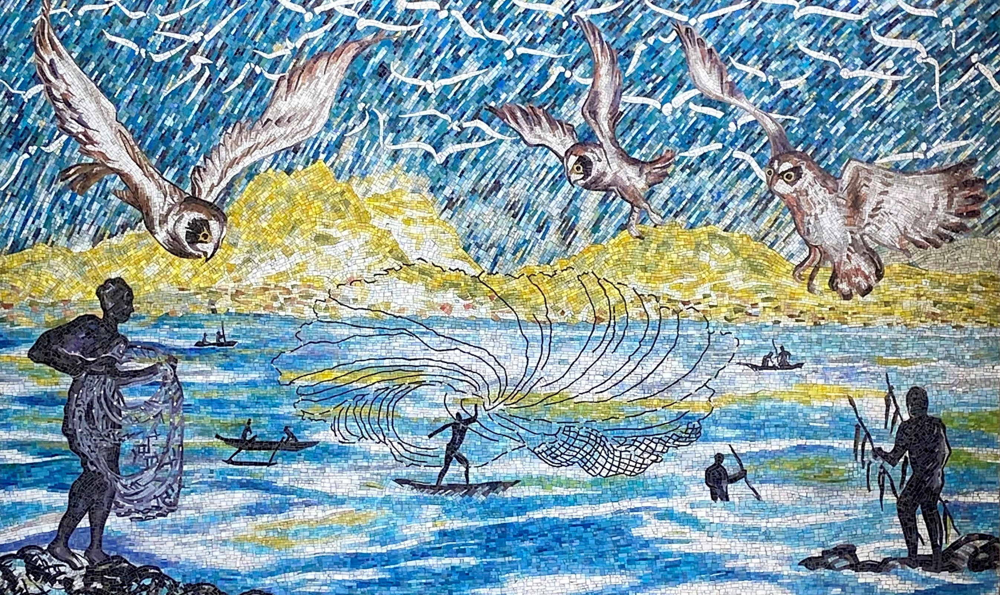

Āhua Rail Station
Place: Āhua Rail Station, Lagoon Drive, Honolulu, Oʻahu
Type: Skyline rail station / transit hub
Namesake: Āhua (“hillock,” “mound,” or “heap”), a former coral reef in the shallow waters of Keʻehi Lagoon
Story it tells: How a modern rail station preserves the name of a coral reef that once rose from Keʻehi Lagoon before twentieth-century dredging and airport development transformed the surrounding coastline.

Āhua Rail Station stands along Lagoon Drive near Keʻehi Lagoon, surrounded today by airport facilities, warehouses, industrial businesses, and highways. The station, however, takes its name from a feature belonging to an entirely different ecosystem. Before dredging and land reclamation completely reshaped this part of Honolulu, Āhua was the name of a prominent coral reef rising from the shallow waters of Keʻehi Lagoon.
The Hawaiian word āhua can mean a “hillock,” “mound,” or “heap,” a fitting description for a clustered reef that rose like a mound from the surrounding waters. The name preserves the shape of a natural feature that has disappeared from the modern landscape.
Āhua formed part of the extensive shallow-water environment that once characterized Keʻehi. Reefs, mudflats, channels, wetlands, and small islands created productive fishing grounds along this portion of Oʻahu's southern coast. Native Hawaiian communities used these waters for harvesting fish, limu, shellfish, and other marine resources.
Nearby Mokauea Island became home to one of Honolulu's best-known fishing communities. Families living along the lagoon depended upon the surrounding reefs and waters, using nets, canoes, and cultural knowledge to harvest the resources of Keʻehi.
That landscape changed dramatically during the twentieth century. As aviation and military activity expanded around Honolulu, the shallow waters of Keʻehi Lagoon became attractive for an entirely different reason. Engineers could dredge the lagoon to create deeper channels and seaplane operating areas while using the excavated coral and sediment to create new land nearby.
During the 1940s, coral reefs were cut through or removed, channels were deepened, and enormous quantities of dredged seabed material were relocated to build shoreline. Coral and sediment removed from Āhua and the surrounding lagoon became fill used to reclaim shallow waters and wetlands, helping create the new land that would support expanding airport, military, and industrial facilities.
Āhua Reef disappeared during this transformation. The reef itself had stood offshore, but material dredged from it and the surrounding lagoon helped create the artificial land closer to shore. A place once defined by coral, wetlands, and a rich coastal ecosystem became a manufactured shoreline of roads, airport facilities, commercial properties, and industrial yards. Lagoon Drive eventually crossed land that had not existed only decades earlier.
Mokauea Island survived amid those changes and remains an important reminder that Keʻehi Lagoon was once a place where Hawaiian families lived and depended upon the sea.
When Honolulu's rail system reached the area, however, the Hawaiian Station Naming Working Group looked for a name that told a story of this place before it was reshaped.
The resulting Āhua Rail Station opened in 2025 as part of Skyline's second operating segment. The elevated station became an important transfer point between rail and bus service while construction of the system continues toward Downtown Honolulu.
The station's public art also reconnects the modern transit corridor with the cultural landscape of Keʻehi. Ka Huina Pueo Ma Kewalo (Gathering of the Owls at Kewalo), a stained-glass mosaic by Carol Yotsuda, depicts fishermen at Mokauea with pueo gathering overhead. Installed within a twenty-first-century rail station, the work recalls the fishing communities and waters that thrived with the abundance of the Āhua reef network.
Today, passengers board Skyline in one of Honolulu's most heavily altered environments, where much of the ground, shoreline, and surrounding infrastructure is the product of twentieth-century dredging and development. The reef itself is gone, but its name has returned.
Āhua preserves the memory of a coral reef, a fishing landscape, and an older Keʻehi Lagoon beneath the modern city.